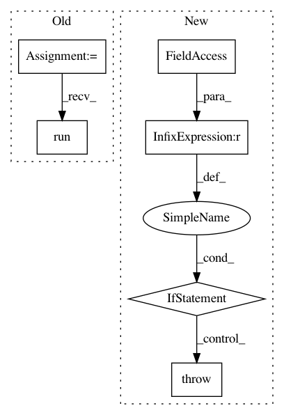

82de5503f44510ad0b060d723ea80236796a53cd,brian2/tests/test_functions.py,,test_manual_user_defined_function,#,226
Before Change
foo.implementations.add_implementations(codes={"cpp": code})
G = NeuronGroup(1, """
func = foo(x, y) : volt
x : volt
y : volt""",
codeobj_class=WeaveCodeObject)
G.x = 1*volt
G.y = 2*volt
mon = StateMonitor(G, "func", record=True)
net = Network(G, mon)
net.run(default_dt)
assert mon[0].func == [6] * volt
def test_user_defined_function_discarding_units():
After Change
def test_manual_user_defined_function():
if brian_prefs.codegen.target != "numpy":
raise SkipTest("numpy-only test")
default_dt = defaultclock.dt
// User defined function without any decorators
def foo(x, y):
In pattern: SUPERPATTERN
Frequency: 3
Non-data size: 6
Instances
Project Name: brian-team/brian2
Commit Name: 82de5503f44510ad0b060d723ea80236796a53cd
Time: 2014-09-26
Author: marcel.stimberg@ens.fr
File Name: brian2/tests/test_functions.py
Class Name:
Method Name: test_manual_user_defined_function
Project Name: pysb/pysb
Commit Name: 47374cd825213029b578e5a22ba9836c0f55d97a
Time: 2015-07-03
Author: oo.ortega2247@gmail.com
File Name: pysb/tools/pysb_pyurdme.py
Class Name: PyurdmeSimulator
Method Name: run
Project Name: geometalab/OSMDeepOD
Commit Name: 82d2e9ea62f1d776331e843266a31fe076d249b1
Time: 2016-08-02
Author: samuel.kurath@gmail.com
File Name: src/data/generation/generate_crosswalk_images.py
Class Name:
Method Name: run